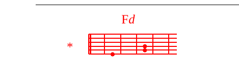

M.+K.Fd *Bwana, usinikeGmee kwa hasira Fdyako
wala usiniGrudi kwa ghadhabu Fdyako.
M.B-Nihurumie, nihurumie, BAwana, ninanyFdauka;
B-uniponye, ABwana, mifupa yangu imefadhFdaika.
GNafsi yangu imefadhaika Fdsana,
Anawe, Bwana, mpaka Fdlini?
K.Anawe, Bwana, mpaka Fdlini?
M.GBwana, urudi, uiopoe nafsi yFdangu,
Gniokoe, Bwana, kwa huruma Fdyako.
Maana Akati ya wafu hakuna anayekukumFdbuka,
K.maana Akati ya wafu hakuna anayekukumFdbuka,
M.wala kuziAmuni hawaimbi sifa Fdzako.
M.+K.Fd *Bwana, usinikeGmee kwa hasira Fdyako
wala usiniGrudi kwa ghadhabu Fdyako.
M.B-Nimechoka kwa kuugua kwangu,
Akila usiku nalowesha godoro langu kwa maB-chozi;
macho Gyangu yaharibika kwa Fddhiki,
na kuchaE-kaa kati ya maadui Fdwengi.
AOndokeni kwangu enyi wFdaovu,
Akwani Bwana asikia kilio Fdchangu,
Akwani Bwana apokea sala Fdyangu.
M.+K.Fd *Bwana, usinikeGmee kwa hasira Fdyako
wala usiniGrudi kwa ghadhabu Fdyako.
